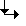
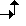

Parameter | Description | Unit |
|---|
Machining
surface  (only for ShopTurn) (only for ShopTurn)
| Face C Face Y Peripheral surface C Peripheral surface Y
| |
Position (only for ShopTurn) | | |

 (only for ShopTurn) | Clamp/release spindle (only for end face Y/peripheral surface Y) The function must be set up by the machine manufacturer. | |

(only for ShopTurn) | Damping brake on/damping brake off (only for face C/per. surf. C) The function must be set up by the machine manufacturer. | |
Machining | ∇ (roughing, plane-by-plane or helical) ∇∇∇ (finishing, plane-by-plane or helical)
| |
Machining type | | |
Machining direction | Machining in the programmed contour direction | |
Radius compensation | A programmed contour can also be machined on the center-point path. In this case, approaching and retraction is only possible along a straight line or vertical. Vertical approach/retraction can be used for closed contours, for example. | |
Slot side compensation (only ShopTurn) | Slot side compensation on or off (only for machining surface, peripheral surface C) | |
D | Offset to programmed path
- (only for slot side compensation on) | |
CP | Positioning angle for machining area
- (only for ShopTurn, machining surface, face Y) Angle CP does not have any effect on the machining position in relation to the workpiece. It is only used to position the workpiece with the rotary axis C in such a way that machining is possible on the machine. | Degrees |
C0 | Positioning angle for machining surface
- (only for ShopTurn, machining surface, peripheral surface Y) | Degrees |
Z0 | Reference point Z | mm |
Z1 | Final drilling depth (abs) or final drilling depth referred to Z0 or X0 (inc) | mm |
DZ | | mm |
UZ | Depth finishing allowance - (only for machining ∇) | mm |
UXY | Finishing allowance, plane | mm |
Approach | Planar approach mode Quadrant: Part of a spiral (only with path milling left and right of the contour) Semi-circle: Part of a spiral (only with path milling left and right of the contour) Straight line: Slope in space Perpendicular: Perpendicular to the path (only with path milling on the center-point path)
| |
Approach strategy | axis-by-axis - (only for "quadrant, semi-circle or straight line" approach) spatial - (only for "quadrant, semi-circle or straight line" approach) 
| |
R1 | Approach radius - (only for "quadrant or semi-circle" approach) | mm |
L1 | Approach distance - (only for "straight line" approach) | mm |
FZ (only for G code) | Depth infeed rate | * |
FZ (only for ShopTurn) | Depth infeed rate | mm/min mm/tooth |
Retraction | Planar retraction mode | |
Retraction strategy | axis-by-axis spatial 
| |
R2 | Retraction radius - (only for "quadrant or semi-circle" retraction) | mm |
L2 | Retraction distance - (only for "straight line" retraction) | mm |
Lift mode | If more than one depth infeed is necessary, specify the retraction height to which the tool retracts between the individual infeeds (at the transition from the end of the contour to the start). Lift mode before new infeed No retraction to RP Z0 + safety clearance By the safety clearance
| |
FS | Chamfer width for chamfering - (only for chamfering machining) | mm |
ZFS | Insertion depth of tool tip (abs or inc) - (only for chamfering machining) | mm |